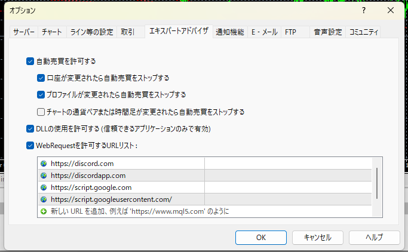

【全システム共通】
導入・初期設定マニュアル
本マニュアルは、VALLHALAが提供するすべてのシステム（EA・サインツール等）を稼働させるための「共通の土台作り」を解説しています。どのシステムをご利用の場合でも、まずはこのページの手順を完了させてください。
Phase 1 稼働環境（VPS）の準備
自動売買システムやシグナルツールは、PCを24時間稼働させ続ける必要があります。ご自宅のPCを使うと、停電やスリープ、Windowsアップデートによる強制再起動などでシステムが停止し、予期せぬ大きな損失を被るリスクがあります。
そのため、安全なトレード環境を構築するために、「VPS（仮想専用サーバー）」の契約を強く推奨いたします。
【代表的なおすすめVPSサービス】
- Hyonix(ハイオニクス)：海外のサービスですが安価で十分な容量が使用できます。
- ABLENET（エイブルネット）：FX自動売買の定番。通信が安定しています。
- ConoHa for Windows Server：初期設定が簡単で初心者向けです。
- お名前.com デスクトップクラウド：FX専用プランがあり安心です。
※VPSを契約したら、提供元のマニュアルに従って「リモートデスクトップ接続」を行い、VPSのWindows画面を開いてください。以降の作業はすべてVPS上で行います。
Phase 2 MT4の必須設定（Web通信と自動売買）
VPS内に指定証券会社の「MT4（メタトレーダー4）」をインストールし、口座にログインしてください。その後、VALLHALAのシステムを正常に稼働させるための必須設定を行います。
STEP 1：自動売買ボタンのON
MT4画面上部にある「自動売買」というボタンをクリックし、赤色（停止）から緑色（稼働）に変更します。
※EAだけでなく、サインツールを稼働させる場合でもこのボタンはONにする必要があります。
STEP 2：オプション設定（DLLとWebリクエスト）★超重要
システムの「口座認証」および「Discord通知」を行うために、外部サーバーとの通信を許可します。この設定が抜けているとシステムは一切動きません。
1. MT4上部メニューの「ツール」＞「オプション」を開きます。
2. 「エキスパートアドバイザ」のタブを開きます。
3. 以下の3箇所にチェック（✅）を入れます。
☑️ 自動売買を許可する
☑️ DLLの使用を許可する
☑️ WebRequestを許可するURLリスト
4. 「WebRequestを許可するURLリスト」の下にある「+（新しいURLを追加）」をダブルクリックし、以下の2つのURLを追加します。
- https://script.google.com （口座認証用）
- https://discord.com （通知用）
5. 最後に「OK」をクリックして設定を保存します。

Phase 3 通知機能の準備（スマホ連携・Discord）
VALLHALAのシステムは、エントリーや決済の状況をリアルタイムで通知する機能を搭載しています。稼働前に、通知の受け皿となる設定を行っておきましょう。（※利用したい通知方法の手順のみ行ってください）
📱 スマホ版MT4へプッシュ通知を送る場合
1. スマホ（iOS/Android）に「MetaTrader 4」アプリをインストールし、口座のログインを完了させます。
2. スマホアプリ内の「設定」＞「チャットとメッセージ」を開き、画面下部に表示されている「MetaQuotes ID（英数字）」をメモします。
3. 次に、VPS（PC版）のMT4で「ツール」＞「オプション」＞「通知機能」タブを開きます。
4. 「プッシュ通知機能を有効にする」「トレード処理を通知する」の2箇所にチェックを入れます。
5. メモした「MetaQuotes ID」を入力し、「テスト」ボタンを押してスマホに通知が来れば設定完了です。
※実際の稼働時は、EAの設定（パラメーター）で UsePushNotify を true にしてください。
💬 Discordサーバーへ通知を送る場合（画像付き対応）
1. スマホまたはPCに「Discord」アプリをインストールし、アカウントを作成・ログインします。
2. ご自身専用のサーバーとチャンネルを作成します。
3. PC版のDiscordで、作成したチャンネルの「設定（歯車マーク）」を開き、「連携サービス」＞「ウェブフック」＞「新しいウェブフック」を作成します。
（※ウェブフックの作成はPC版の画面からのみ可能です）
4. 「ウェブフックURLをコピー」をクリックして、URLをメモ帳などに控えておいてください。
※控えたURLは、システム稼働時にEAの設定（パラメーター）にある DiscordWebHook 等の欄に貼り付け、UseDiscord を true にして使用します。
Phase 4 ファイルの基本的な配置ルール
各システムごとの専用ページからダウンロードした「ZIPファイル」を解凍すると、中に複数のファイルが入っています。これらはMT4内の指定されたフォルダに正確に配置する必要があります。
ファイルの入れ方
1. MT4上部メニューの「ファイル」＞「データフォルダを開く」をクリックします。
2. 開いたウィンドウの中から「MQL4」フォルダをダブルクリックして開きます。
3. ダウンロードしたファイルを、それぞれ以下のフォルダにコピー＆ペーストして入れます。
📁 .ex4ファイル（システム本体）の場合
➔ MQL4 ＞ Experts フォルダの中に入れる
📁 .setファイル（パラメーター設定ファイル）の場合
➔ MQL4 ＞ Presets フォルダの中に入れる
4. ファイルを入れたら、MT4の左側にある「ナビゲーター」ウィンドウ内の「エキスパートアドバイザ」の上で右クリックし、「更新」を押します。
5. ナンビゲーター内にシステムの名前が表示されれば、準備完了です！
以上で、VALLHALAシステムを稼働させるための「共通の土台作り」は完了です。
続いて、各システムの専用マニュアルに従ってチャートへの適用を行ってください！